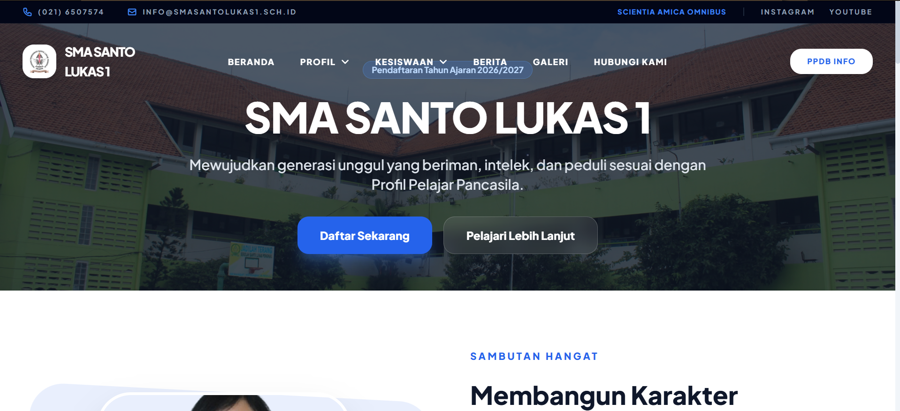
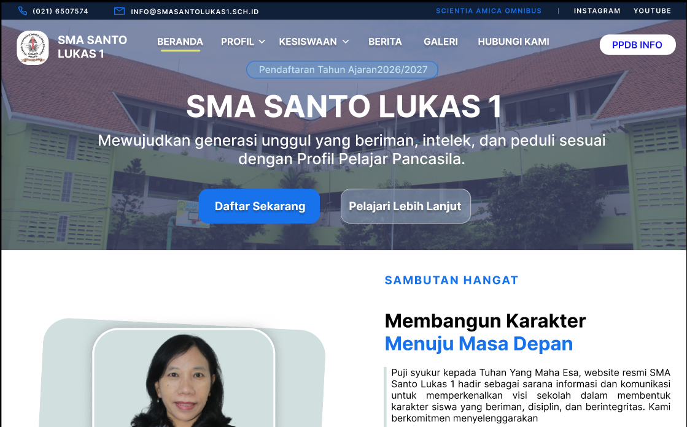

CASE STUDY / USABILITY TESTING
Menguji kemudahan
website SMA Santo Lukas.
Evaluasi usability website SMA Santo Lukas 1 Jakarta menggunakan metode Single Ease Question (SEQ), untuk melihat seberapa mudah responden menyelesaikan serangkaian task.
OVERVIEW
Problem
Permasalahan utama website terletak pada menu Agenda Sekolah dan Hubungi Kami yang masih sulit ditemukan atau digunakan oleh pengguna. Selain itu, penempatan dan struktur beberapa menu perlu diperbaiki agar navigasi website menjadi lebih mudah dan nyaman.
Solusi
Rekomendasi perbaikan berfokus pada peninjauan posisi, nama, dan alur menu Agenda Sekolah, serta visibilitas menu Hubungi Kami. Pola navigasi yang mendapat skor tinggi dapat dipertahankan sebagai acuan, lalu diuji kembali dengan observasi atau pertanyaan singkat setelah task.
My Role
Designer UI/UX Student
Timeline
3 minggu
Team Members
Solo Project
Tools
Figma, VS Code, HTML, CSS, JavaScript
01 / DESIGN PROCESS
Before redesign
Desktop website

02 / AFTER DESIGN
After redesign
Hasil desain setelah perbaikan navigasi dan penataan menu.

03 / PROTOTYPE
Menjalankan prototype
Video berikut menunjukkan alur prototype website saat dijalankan, mulai dari navigasi hingga melihat halaman dan informasi yang tersedia.
01 / HASIL PENGUJIAN
Skor usability
Rata-rata keseluruhan berada di atas benchmark yang digunakan.
Rata-rata 10 task
6,36 / 7Benchmark
5,5 / 7Rentang rata-rata task
5,6–6,8 / 7Seluruh task case memperoleh rata-rata di atas benchmark.
02 / REKOMENDASI
Peluang perbaikan
Area prioritas ditentukan dari task dengan rata-rata skor terendah dan pola navigasi yang sudah berjalan baik.
-
Menu Agenda Sekolah
Tinjau posisi, nama, dan alur menu agar lebih mudah dikenali dan ditemukan pengguna.
-
Menu Hubungi Kami
Periksa kembali visibilitas dan penempatan menu, termasuk kemudahan pengguna menemukan informasi kontak.
-
Struktur navigasi
Pertahankan pola navigasi pada task dengan skor tinggi dan jadikan referensi untuk halaman lain.
-
Pengujian lanjutan
Tambahkan observasi atau pertanyaan singkat setelah task untuk memahami penyebab skor individual yang lebih rendah.
03 / KESIMPULAN
Hasil baik, dengan fokus evaluasi yang jelas.
Pengujian terhadap 5 responden dan 10 task menghasilkan rata-rata 6,36 dari 7, lebih tinggi dari benchmark 5,5. Task TC-05 Agenda Sekolah dan TC-09 Hubungi Kami memperoleh rata-rata paling rendah, sehingga keduanya menjadi fokus evaluasi usability berikutnya.